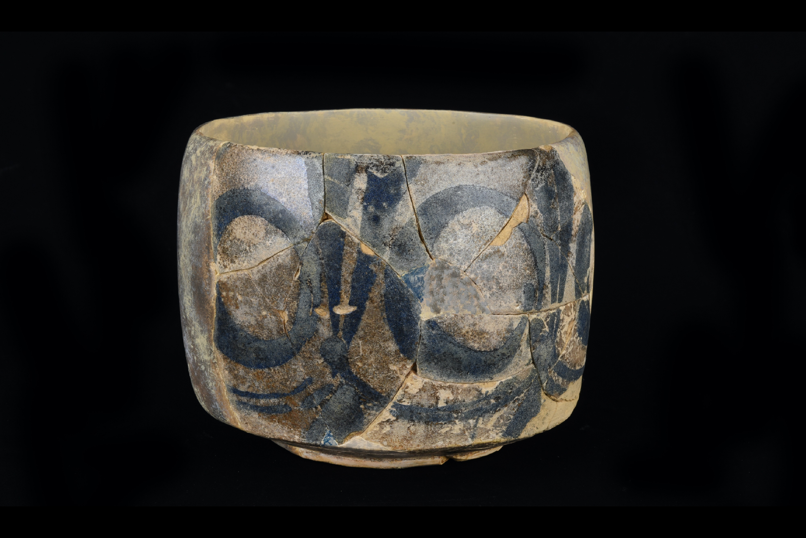

Abbasid Bowl
9th century
Murwab, Qatar
This tableware was discovered in one of the houses excavated in Murwab by the 2009 French-Qatari archaeological mission. This tableware is a large bowl with a straight wall and a drawing of circles painted in cobalt blue, made with brushes. This particular technique and colour "cobalt blue" is directly inspired by Chinese ceramists of the 7th century and was imported by Muslim traders who had trading posts in southern China. These ceramics reached the great port of Basra (Iraq) in the middle of the 8th century. Famous potters from Susa (Iran) or Samarra (Iraq) produced their own designs and thus spread throughout the Middle East and the Gulf as far as Qatar.
- 


Object Details
Title:Abbasid kohl applicator
Period:Early Abbasid Period
Date:9th century
Provenance:Murwab, Qatar
Registration Number:QNM.2009.7.359
Medium:Earthenware, with an opaque white glaze and blue cobalt in-glaze staining
Dimensions:14,2 cm height
Credit Line: Randa Dalloul/Sylvie Van Roe - © NMoQ
Contributors: Dr. Alexandrine Guérin/ Tania Al Majid
Location:Gallery 3
 House 611 where the object was found in Murwab, 2007,
Trace of the collapse of the southern walls
©a.guerin/MAFQa- QatarMuseums
House 611 where the object was found in Murwab, 2007,
Trace of the collapse of the southern walls
©a.guerin/MAFQa- QatarMuseums
 House 611 where the object was found in Murwab, 2007,
general view of house 611 (foreground)
and houses 610 and 614 in the background
©a.guerin/MAFQa- QatarMuseums
House 611 where the object was found in Murwab, 2007,
general view of house 611 (foreground)
and houses 610 and 614 in the background
©a.guerin/MAFQa- QatarMuseums
 House 611, detail of the internal bench adjoining
the north wall
©a.guerin/MAFQa- QatarMuseums
House 611, detail of the internal bench adjoining
the north wall
©a.guerin/MAFQa- QatarMuseums
It is from 628 EC that the population of Qatar joined the Muslim community and belongs to the new province comprising the territories of Bahrain, Al-Hasa Oasis and Qatar. During the 9th century, Qatar took part in this immense Abbasid Empire and many traces allow us to evaluate a flourishing trade. Murwab, the largest settlement of this period is constituted of forty houses, one fort with two occupations and two mosques.
From the beginning of the Abbasid Caliphate, the Caliph Al-Mansur built ex-nihilo the round city of Baghdad in 762 (Madinat as-Salam). This new capital on the banks of the Tigris River became the centre of power, transferring trade and culture from Damascus, the former capital of the Umayyads, to more eastern territories.
It is in Baghdad that the oldest House of Wisdom (Bayt al-Hikma), was founded in 832 during the reign of Al-Ma’mun (813-833). It is a particularly active establishment, specializing in the translation of works into Greek, Pehlevi and Syriac. Scientists, astronomers, mathematicians, thinkers and scholars came here from all over the Abbasid Empire, facilitating a constant interchange of ideas and goods into the Arab-Muslim world of that period.
- Guerin, A., and Swan, C. M., 2020, « Abbasid Glassware in Eastern Arabia: Finds from Murwab, Qatar (ca. 805-885 CE) », Corning Museum of Glass, USA.
- Guerin, A., and Al-Na’imi, F., 2010, " Preliminary pottery study: Murwab horizon in progress, ninth century AD, Qatar ", in Proceedings of the Seminar for Arabian Studies, Archaeopress, Oxford, vol. 40, p. 17-34.
- Guerin, A., and Al-Na’imi, F., 2009, " Settlement Patterns during the Abbasid Period in Qatar : the case of Murwab Site ", in Proceedings of the Seminar for Arabian Studies, Archaeopress, Oxford, vol. 39, p. 181-196.